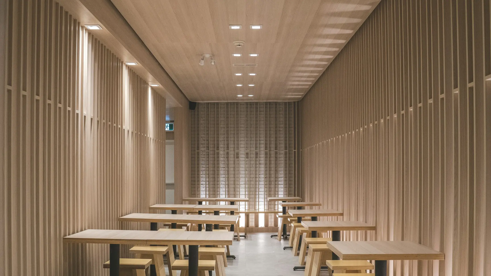
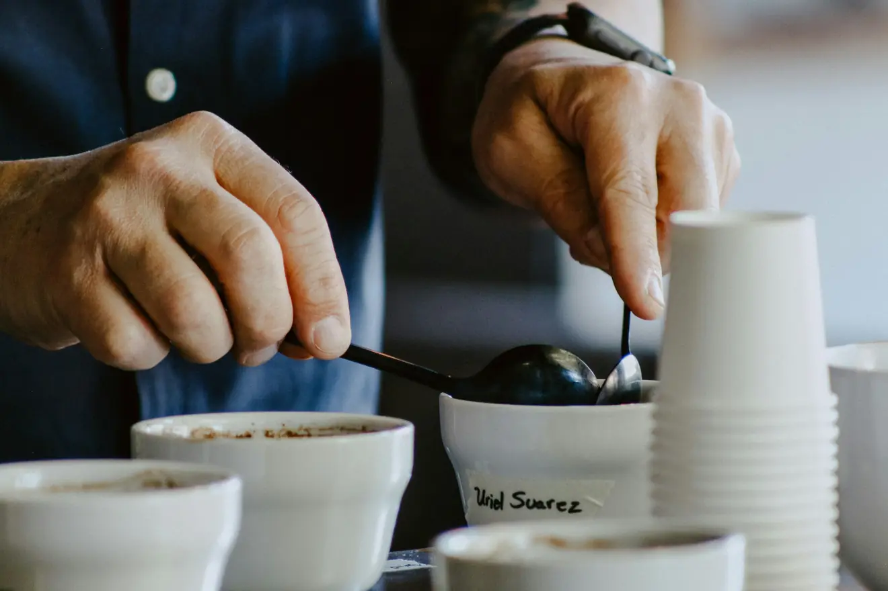

Gastraum
Kommen Sie samstags.
Dann wird geröstet, und dann wird verkostet. An den anderen Tagen ist es ruhiger — auch schön.

Öffnungszeiten
- Montag
- Ruhetag
- Dienstag bis Freitag
- 8 – 18 Uhr
- Samstag
- 9 – 16 Uhr
- Sonntag
- 10 – 16 Uhr
Verkostung
Samstags wird geröstet und anschließend verkostet. Wer dabei sein will, kommt einfach vorbei — Anmeldung braucht es nicht, einen Platz an der Theke schon.
Los geht es samstags um 11 Uhr, die Runde dauert etwa 45 Minuten und kostet nichts.

Vor der Öffnungzehn Tische, eine Theke

Langer Tischfür alle, die allein kommen

Thekezwei Mühlen, ein Siebträger

SamstagsLöffel, Tasse, Gespräch
Anfahrt
So finden Sie her.
Mit der Straßenbahn 1 oder 2 bis Helmstedter Straße, von dort hundert Meter stadtauswärts auf der linken Seite. Mit dem Auto über den Bohlweg; im Hof stehen sechs Plätze für Kundschaft.
Eine eingebettete Karte fehlt hier bewusst: sie würde beim Aufruf Daten an einen fremden Anbieter senden, bevor jemand eingewilligt hat. Der Link darunter wird erst auf Klick geöffnet.